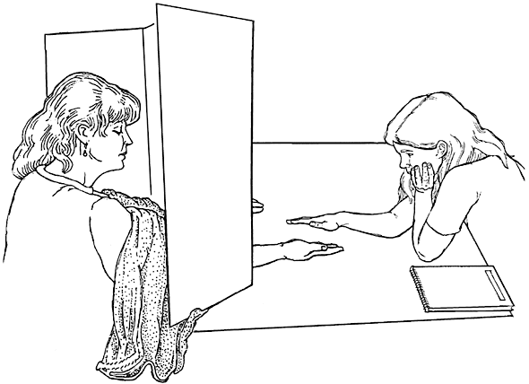

If Emily Rosa met Thomas Bayes ...
Twenty years ago 11-years-old Emily Rosa and her parents publsihed their study in Journal of the American Medical Association. This study was designed by Emily herself two years before the publication. Before 1998, Therapeutic Touch (commonly shortened to “TT”) had been advocated in hundreds of hospitals and nursing schools in North America. Forty thousands of health care professionals had been trained to use TT for their patient. The trained TT professionals were claimed, by the promoters, have the skill to manipulate the energy field surrounded human body without touching. TT professionals just stoped the plams above the patients' body for minutes to cure their pain and anxiety. However, the evidence about the reality of TT was vague.

Emily was curious how real was TT technique. To test their skill under unbiased observations, she designed the test table like the below figure shows. Every trainee would run 10 trials in one test. In each trial, Emily placed her right hand above one of the participated trainee' hand, decided by flipped coin. She had the hypothesis if the skill of TT trainees was real, they would give the correct answers in at least 8 of the trials.

Emily ran this study two times between 1996 and 1997. At the first time 15 TT trainees were invited to this study. She deiced to run the second time after the TV station interviewed her. At the second time 13 TT trainees, included 7 had participated in the first time, joined this study. Their analysis showed the average accuracy of these trainees as equal to the random guessing.
We would learn many things from Emily’s study till today. First of all the critical finding was the null effect. Today the behavioral scientists share more attention about the null effect than 1998. The other interesting thing is that the prediction could be verified by one point. It is rare to use the one-sample t-test in the psychological studies, but almost every psychologist learned the one-sample t-test before the independent t-test and paired t-test. Latest but may be critical, the idea of little Emily embodied the statistical thinking.
Emily’s data were summarized in the reproduced figure as below. They ran the one-sample t-test for the results of two times respectively. The analyses disconfirmed the reality of TT technique, but Emily and her parents might show a kind of researcher flexibility: they used the small samples in their first and follow-up studies. Could we upgrade their results in addition to conduct a registered replication plan?

Figure 1: Reproductive test results of Rosa et al.(1998)
If Emily had learned Bayesian statistics in 1998, she would show the reporters her stronger belief how fake the TT technique was. Next, I use the binomial probability distribution to reanalyze Emily’s data in the simple Bayesian inference. My first step is the recovery of the original correct frequency of every TT participant. Although Emily’s paper gave the range of scores (initial study: 2 to 8; follow-up study: 1 to 7), they did not provide the how many correct trials conducted by every participant. I arranged the numbers based on the averages and number of total correct responses as follows:
(R-chunk, vectors of numbers)
# Initial test data
Data_initial <- c(2,3,3,3,3,4,5,5,5,5,5,6,6,7,8)
# Follow-up data
Data_followup <- c(1,3,3,3,3,4,4,4,4,5,5,7,7)
Then I required the theoretical parameters representing Emily’s hypothesis. Her study in nature was a game of coin tossing. She assumed certificated TT participants, given their technique was real, could answer correctly in more than 8 trials. In the other word, among the ten coins flipped by Emily, they could look into which 8, 9, or all sides on the top. Before the initial study, Emily could assume the probability each participant give the correct answer in a trial to be more than 0.5. If she used Bayesian inference, she would expect the posterior probability higher than 0.8. Therefore I prepared the uniform distribution ranged between 0.5 and 1 as the prior probability of the Bayesian inference.
# Study parameters
n_TT <- 10000
n_trials <- 10
# Theoretical accuracies
min_acc <- 0.5
max_acc <- 1
### Analaysis of initial test
# Prior accuracy of TT partitioners before initial test
Correct_proportions_initial <- runif(n=n_TT, min=min_acc,max=max_acc)
It was recorded that only one participant returned 8 correct answers in the initial study. My Bayesian model used the binomial distribution with the arguments of 10 trials and prior probabilities. This model generated the posterior probability distribution given the data of Emily’s initial study. The average of the initial study was 4.67; thus I retrieved the posterior probability distribution of 5 from the Bayesian model.

Figure 2: Bayes

Figure 3: Posterior distribution
According to the posterior probability distribution of the initial study, the probability of TT trainees returned more than 8 correct answers would be 0.018. Because Emily had never considered the reproduction of her initial study before the interview, the follow-up study was like the second chance for the TT trainees. After the initial study, Emily updated her assumption of how many correct answers TT trainees could return in this study. I used the posterior probability distribution of the initial study as the prior probabilities for the analysis of the follow-up study. Then I built the Bayesian model and retrieved the posterior probability distribution given the average 4.06, I truncated to 4.

Figure 4: Bayesian inferece of follow-up study: Prior probability distribution (y axis) and Conditioning correct frequencies (x axis)

Figure 5: Posterior probability distribution of follow-up study result
The histogram of the posterior probability distribution shows zero possibility beyond 8. My reanalysis indicates that Emily’s study indeed falsified the reality of Therapeutic Touch. You may wonder if people have updated the understanding of Therapeutic Touch because of Emily’s study. Till today the official website of Therapeutic Touch is regularly upgrading the latest information. More efforts are required to guide people thinking this world with scientific and statistical knowledge.
!登入個人github帳號就能留言!